Differentiable plasticity FEM in JAX
A mechanical test never measures the hardening law. It measures the law after it has passed through the local plastic response, equilibrium with contact, the loading history and the readout. These notes build a fully differentiable small punch test (SPT) model in JAX, follow how information about the law travels to the measured load, and compute its derivatives exactly.
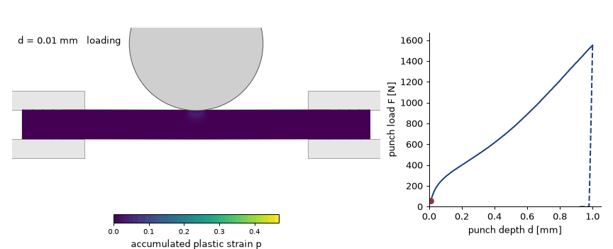
- 0 · What is in the model
- 1 · Isotropic and kinematic hardening
- 2 · The forward solve
- 3 · Checked against Abaqus
- 4 · How a parameter change travels to the load
- 5 · A local Bayesian view
- 6 · What the backstress does inside the punch
- Where this leads
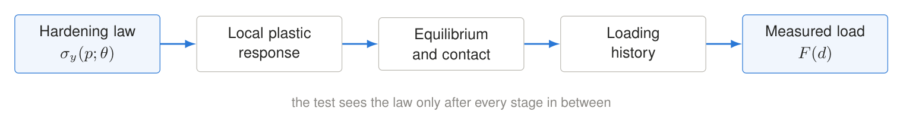
0 · What is in the model
Everything below is plain JAX, with no external FE code inside the loop. The whole simulation, from the material parameters to the punch load and the bottom-face displacements, is one differentiable program.
| Geometry | axisymmetric disc (about 0.5 mm thick, 4 mm die aperture), spherical punch of radius 1.2 mm, upper and lower dies with fillets |
| Kinematics | finite strain, total Lagrangian; F-bar quadrilaterals against volumetric locking; mesh refined under the punch |
| Isotropic hardening | Voce, \(\sigma_y(p)=\sigma_0+Q\,(1-e^{-\beta p})\) |
| Kinematic hardening | Chaboche: a sum of Armstrong–Frederick backstresses, carried with an objective (Jaumann or Green–Naghdi) rate |
| Local update | backward-Euler radial return, solved inside jax.lax.custom_root; the consistent tangent comes from implicit differentiation |
| Contact | penalty contact with the punch and both dies; frictionless by default, Coulomb friction optional |
| Global solve | Newton with the condensed tangent; a block-tridiagonal (block-Thomas) linear solve that exploits the banded mesh |
| Derivatives | forward mode (one tangent per parameter) and reverse mode (adjoint) through every increment; a custom_jvp on the Newton solve, so derivatives never differentiate the iterations |
| Checks | closed-form uniaxial solutions; Abaqus/Standard on an identical mesh (Section 3); finite differences |
1 · Isotropic and kinematic hardening
A metal can get stronger in two ways. Isotropic hardening (Voce) grows the elastic domain equally in every direction. Kinematic hardening (Armstrong–Frederick, Chaboche) moves it: a backstress \(\alpha\) shifts the centre of the yield surface towards the direction of loading. In tension alone the two can be made to give exactly the same curve. The difference appears only when the loading turns. After tension, the shifted surface reaches the compression side early (the Bauschinger effect); the grown one does not.
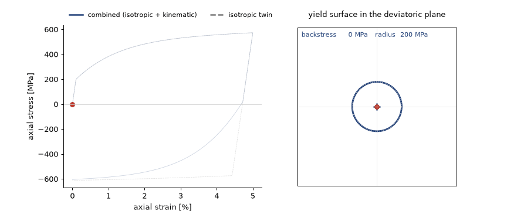
In the solver, the backward-Euler return map collapses to one scalar equation for the plastic multiplier. That
equation is solved inside jax.lax.custom_root, so the consistent tangent is a single
jax.jacfwd. It matches the textbook closed form to round-off.
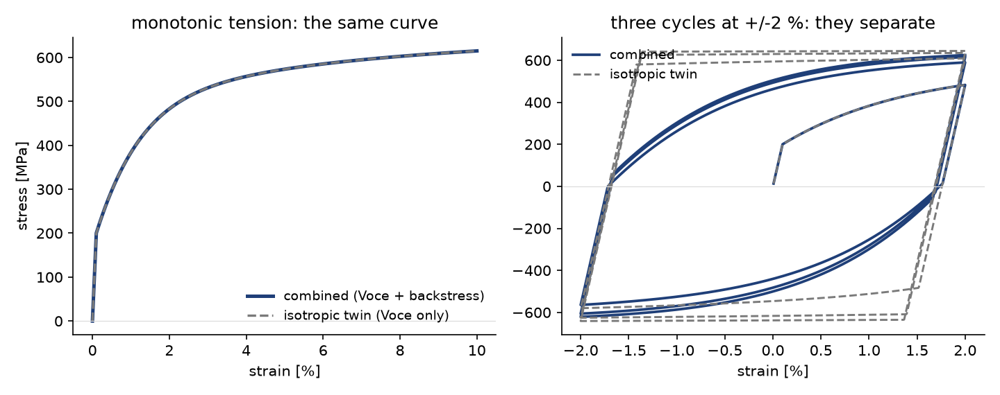
2 · The forward solve: one load increment at a time
The punch is pushed into the plate in small steps of depth \(d_1, d_2, \dots, d_N\). Each step (an increment \(k\)) is a full nonlinear solve: find the nodal displacements for which the plate is in equilibrium, every Gauss point satisfies the plasticity law, and the plate does not pass through the punch. Once that is found, the plastic state is stored (committed) and becomes the starting point for the next step. The punch load \(L_k\) is read off at the end of each step, which gives the load–depth curve.
- \(k\)
- increment (load step), \(k=1,\dots,N\)
- \(U,\ \lambda\)
- nodal displacements; contact pressure on the contact surface \(\Gamma_C\)
- \(x_g\)
- a Gauss (integration) point, where the material law is evaluated
- \(v=(\sigma,\varepsilon^p,X,p)\)
- unknowns at one Gauss point: stress, plastic strain, back-stress, accumulated plastic strain
- \(q=(\varepsilon^p,X,p)\)
- the history: the part of \(v\) that is stored and carried to the next increment
- \(\theta=(\sigma_0,Q,\beta)\)
- the hardening parameters we ask about
- \(h,\ r\)
- local residual (material law at a Gauss point) and global residual (force balance)
- subscripts
- partial derivatives: \(h_v=\partial h/\partial v\), \(r_U=\partial r/\partial U\), \(h_\theta=\partial h/\partial\theta\)
- \(B,\ K_k\)
- strain–displacement matrix; the tangent stiffness of increment \(k\)
- \(L_k\)
- punch load at increment \(k\) (the measurement)
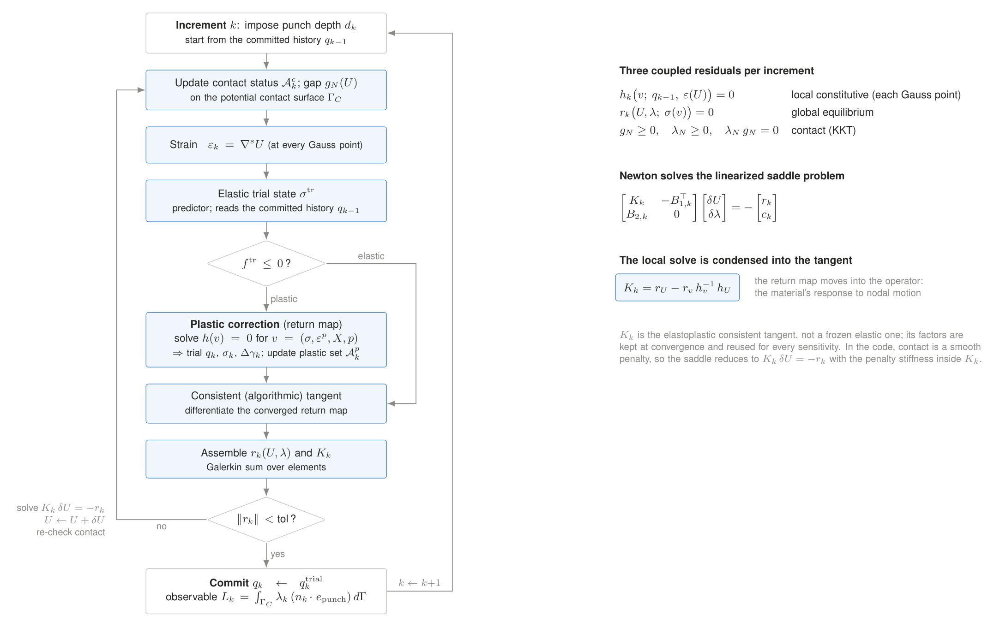
Reading the flowchart (left, top to bottom). Impose the new depth \(d_k\), starting from the stored history \(q_{k-1}\). Check which nodes touch the ball. Compute the strain at every Gauss point from the current displacements. Assume the step is elastic (the trial stress); if the trial stress lies inside the yield surface (\(f^{\rm tr}\le 0\)) it is accepted, otherwise the return map pulls it back onto the surface and updates the plastic variables. Differentiate that converged local update to get the consistent tangent, assemble the global residual \(r_k\) and stiffness \(K_k\), and take a Newton step. Repeat until the residual is small, then commit the history and read the load.
The right side says the same thing in equations. Three sets of conditions must hold together: the material law at every Gauss point (\(h_k=0\)), force balance (\(r_k=0\)), and contact (gap \(g_N\ge0\), pressure \(\lambda_N\ge0\), and pressure only where the gap is closed). Newton linearizes all of them at once. The key step is the boxed formula: the local unknowns can be eliminated, so the material's whole response is folded into one matrix, \(K_k = r_U - r_v h_v^{-1} h_U\) ("how the nodes push back when moved, after the material has re-equilibrated"). That factorized \(K_k\) is reused, unchanged, for every derivative in Section 4.
Six building blocks
Everything in Section 4 is assembled from six small maps. Each panel below shows one of them as a pipeline: the input on the left, the output on the right, and the formula underneath.
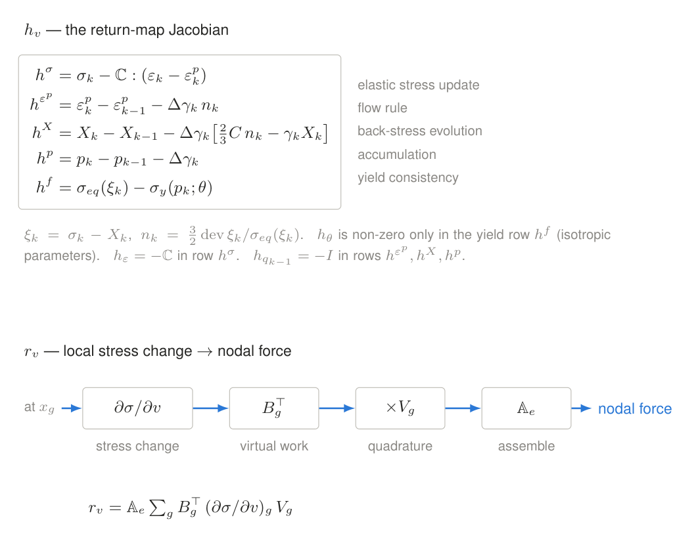
\(h_v\), the local block. The five equations a Gauss point must satisfy in one step: stress from elastic strain, the flow rule, back-stress evolution, accumulation of plastic strain, and staying on the yield surface. Its Jacobian \(h_v\) is what the return map inverts. Note where things enter: the parameters \(\theta\) appear only in the last (yield) row, through \(\sigma_y(p;\theta)\); the strain enters only the stress row; the stored history enters only the three evolution rows. \(r_v\), local to global. A change in stress at a Gauss point becomes a nodal force by the usual finite-element route: multiply by \(B^\top\) (virtual work), weight by the Gauss volume, and add up over elements.
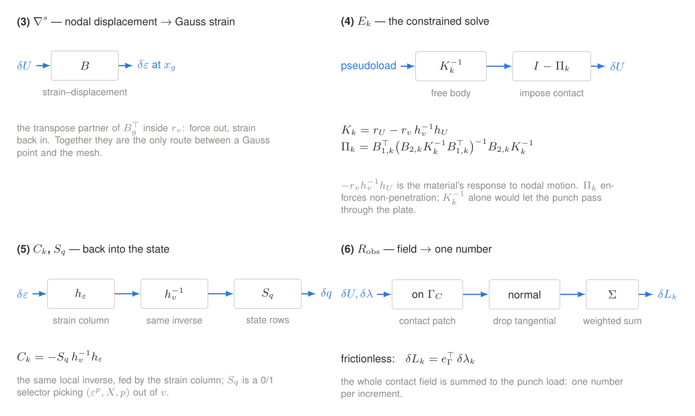
\(\nabla^s\) (top left) is the opposite direction: nodal displacement to strain at each Gauss point, through \(B\). \(E_k\) (top right) answers "given extra forces, how do the nodes move?": solve with the tangent \(K_k\), then project with \(\Pi_k\) so the plate still respects contact (without it the punch could pass through the plate). \(C_k,\ S_q\) (bottom left) turn a strain change back into a change of the stored history, using the same local inverse \(h_v^{-1}\); \(S_q\) just picks the history entries out of \(v\). Readout (bottom right): of all the fields, only the contact pressure on the contact patch is measured; summing its normal part gives the single number \(\delta L_k\).
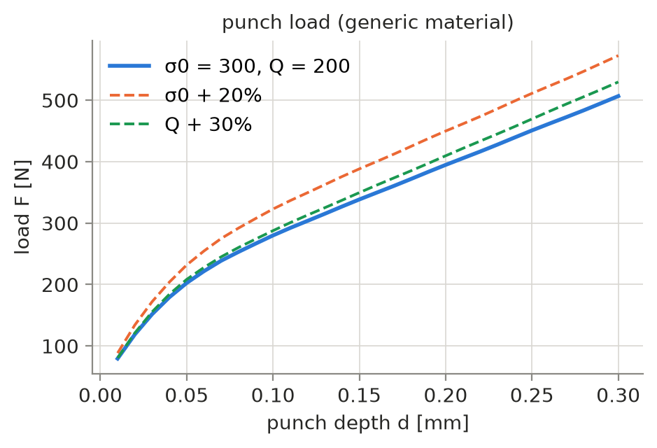
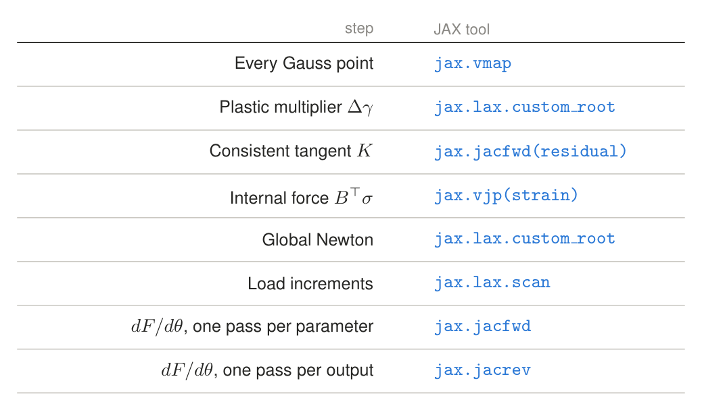
3 · Checked against Abaqus
A differentiable solver is only useful if its forward answer is right. The JAX model was run against
Abaqus/Standard with its built-in combined hardening (*Plastic, hardening=COMBINED with
*Cyclic Hardening) on an identical mesh, for three parameter sets. Two things are compared: the
punch force, and the backstress in every element.
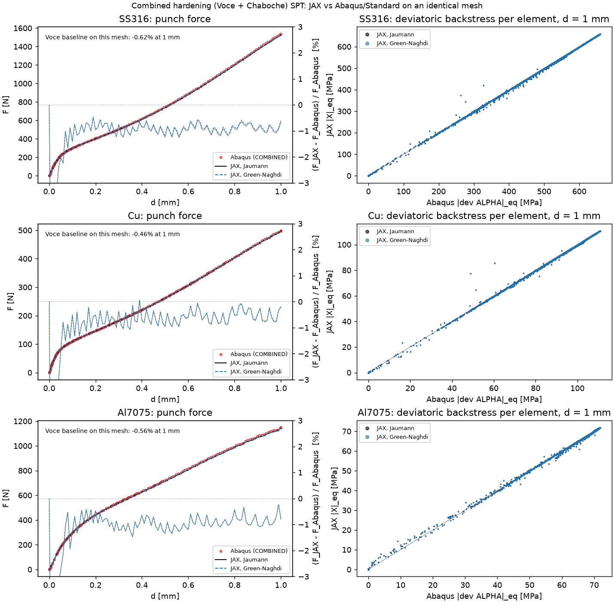
Kinematic hardening shows itself mainly when the load reverses, so the stronger test is unloading. The same comparison on a cyclic path (two partial unload–reload loops and a final unload) is shown below, for the combined model and for its isotropic twin.
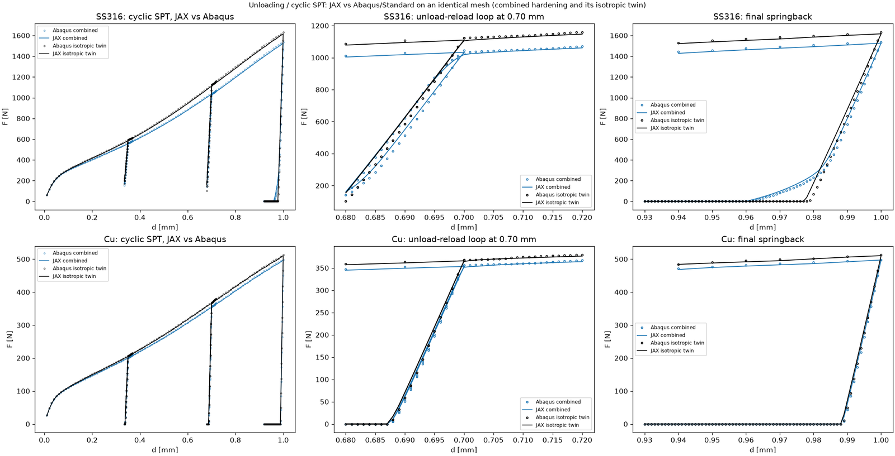
4 · How a parameter change travels to the load
The question of this section: if \(\sigma_0\), \(Q\) or \(\beta\) is nudged by \(\delta\theta\), how much does the load at each depth change? The answer is the Jacobian \(J=\partial L/\partial\theta\) (one row per depth, one column per parameter). The charts show that computing it needs no new solver, only the building blocks above, reused in a fixed order.
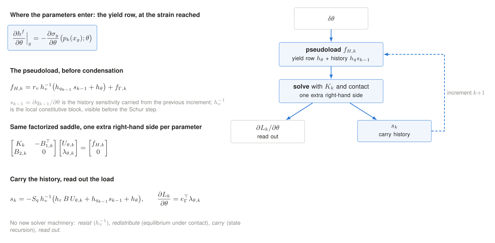
Four moves per increment (follow the blue boxes on the right).
- Source. The parameters touch only the yield row (top-left box): a nudge to \(\theta\) shifts the yield stress at the plastic strain each Gauss point has reached. Elastic points feel nothing.
- Pseudoload. That shift, plus whatever the earlier increments already changed in the history (\(s_{k-1}=\partial q_{k-1}/\partial\theta\)), is pushed through \(h_v^{-1}\) (the material resists) and \(r_v\) to become an equivalent set of nodal forces \(f_{H,k}\). The extra term \(f_{\Gamma,k}\) is the corresponding contribution from the contact rows.
- Solve. Those forces are applied to the same factorized system as the forward Newton step: one extra right-hand side per parameter. This gives how the displacements and contact pressures move, \(U_{\theta,k}\) and \(\lambda_{\theta,k}\).
- Carry and read out. Two things are kept: the new history sensitivity \(s_k\), which feeds the next increment (dashed loop), and the load sensitivity \(\partial L_k/\partial\theta\), read off the contact pressure.
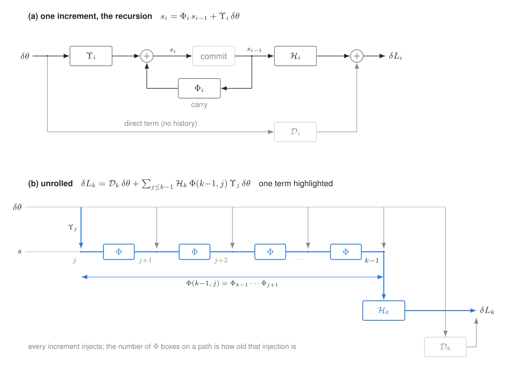
The same thing as a signal-flow diagram. (a) Per increment, the bookkeeping is linear: the new history sensitivity is the old one carried forward, plus what this increment injects, \(s_i=\Phi_i s_{i-1}+\Upsilon_i\,\delta\theta\). The load change is read from the history (\(\mathcal H_i\)) plus a direct part that needs no history (\(\mathcal D_i\)). Here \(\Upsilon\) = "inject", \(\Phi\) = "carry", \(\mathcal H\) = "read through the history", \(\mathcal D\) = "read directly". (b) Unrolling over increments: every increment injects something, and an injection made at step \(j\) reaches the load at step \(k\) only after being carried through \(k-1-j\) \(\Phi\) boxes (one path highlighted in blue). So the load at depth \(k\) is the sum of contributions of every earlier step, each weighted by how far it has been carried.
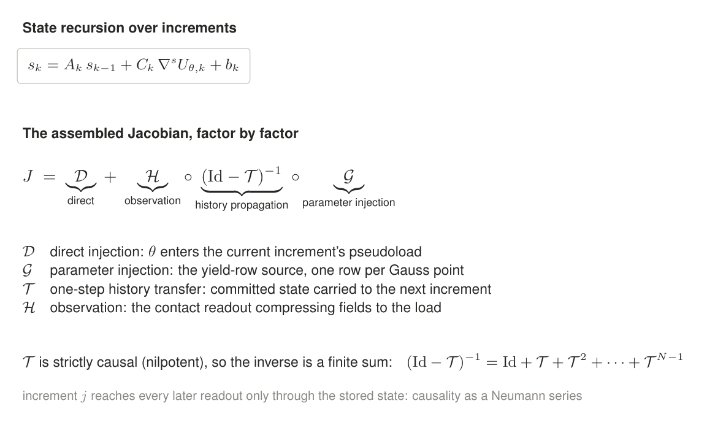
Stacking all increments turns those per-step boxes into four operators, and the full Jacobian factors as: inject (\(\mathcal G\)), propagate through history (\((\mathrm{Id}-\mathcal T)^{-1}\)), observe (\(\mathcal H\)), plus the direct part (\(\mathcal D\)). Because a step can only affect later steps, \(\mathcal T\) shifts information strictly forward in time, so the inverse is an exact finite sum: this is the unrolled picture above, written as one formula.
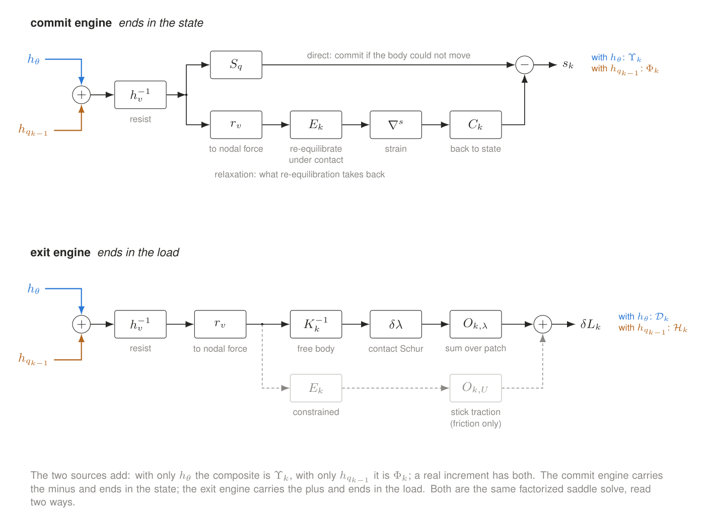
What is inside \(\Upsilon,\Phi,\mathcal H,\mathcal D\). All four are the same chain of building blocks, fed by one of two sources: the parameter source \(h_\theta\) (blue) or the history source \(h_{q_{k-1}}\) (orange). The commit path (top) ends in the stored state: the local block resists the change, and what the rest of the plate gives back after re-equilibrating (\(r_v\to E_k\to\nabla^s\to C_k\)) is subtracted. Fed by \(h_\theta\) it is \(\Upsilon_k\), fed by the history it is \(\Phi_k\). The exit path (bottom) ends in the load instead, through the contact pressure; fed by \(h_\theta\) it is \(\mathcal D_k\), fed by the history it is \(\mathcal H_k\). The grey dashed branch only matters with friction and is zero in this frictionless model.
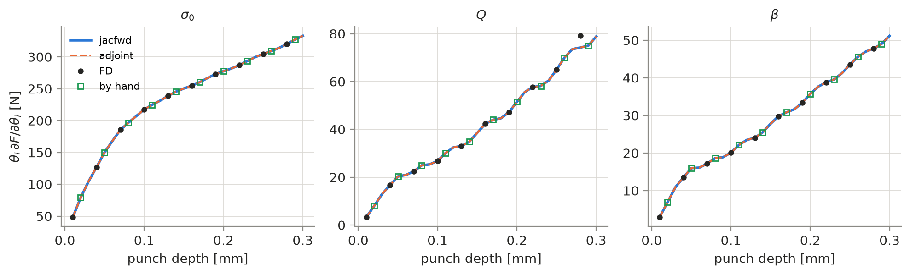
5 · A local Bayesian view with three parameters
Around one anchor, the data add precision Γ = JTΣ−1J. Its eigenvectors are the combinations of (σ0, Q, β) that a test pins down or leaves loose; along mode i the posterior variance shrinks by 1/(1+λi).
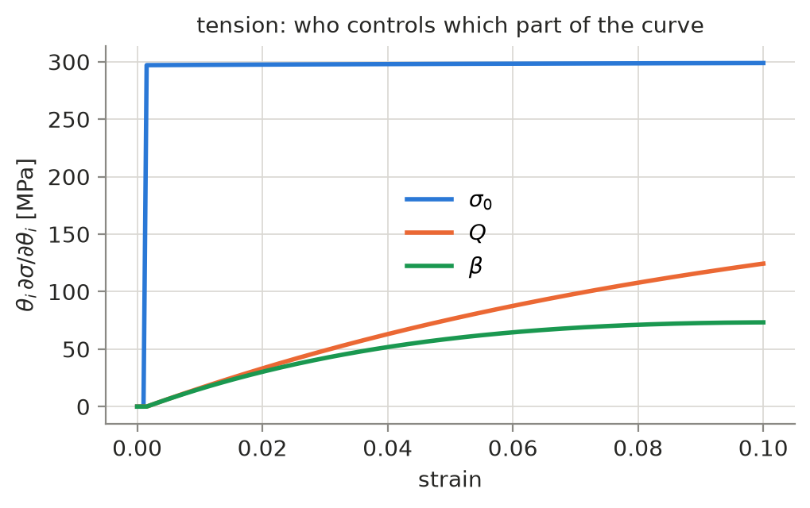
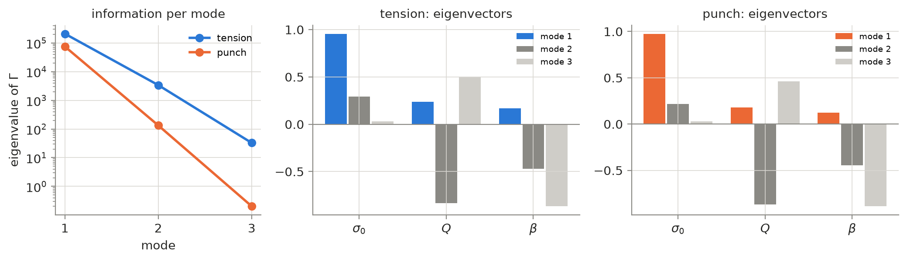
6 · What the backstress does inside the punch
In a tensile bar the loading direction never changes, so a backstress and an equal amount of isotropic hardening cannot be told apart. In the punch test the disc bends, stretches and wraps around the ball, so the direction in which each point flows turns as the punch goes in. Wherever it turns, the backstress, built up along the old direction, is no longer aligned with the stress. The kinematic angle \(\varphi\) measures this: it is the angle between the deviatoric stress \(s\) and the flow direction \(\hat n\propto s-\alpha\). With isotropic hardening alone, \(\varphi=0\) everywhere.
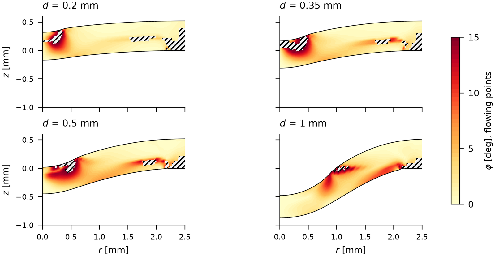
This is why the backstress is hard to see in the force curve during loading. It shows mostly on unloading and reloading (Section 3), and in the full-field (DIC) displacement of the bottom face, which the solver also produces and differentiates.
Where this leads
The same machinery can ask a sharper question: at each punch depth, which part of the hardening curve does the load actually respond to? Instead of three Voce parameters, the hardening law is treated as a whole function of plastic strain, and the derivatives above are resolved along that strain axis. A first look:
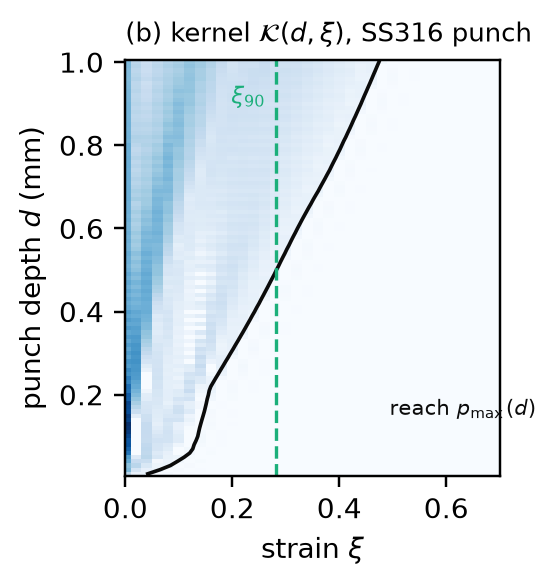
Sections 2, 4 and 5 use the small-strain teaching model of the notes (generic material). The animations and Sections 3 and 6 use the full finite-strain solver. This page shares the write-up and figures only.
Click any figure to open it at full size.